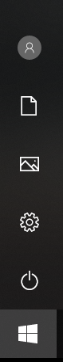
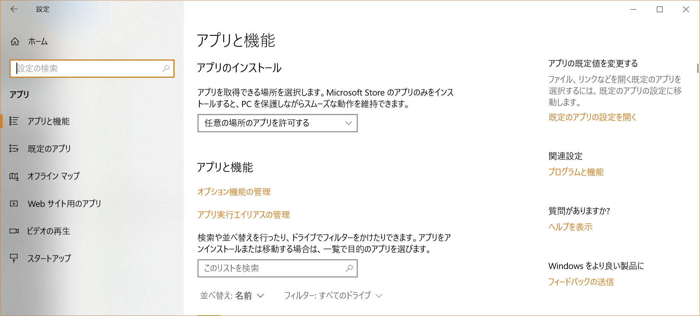
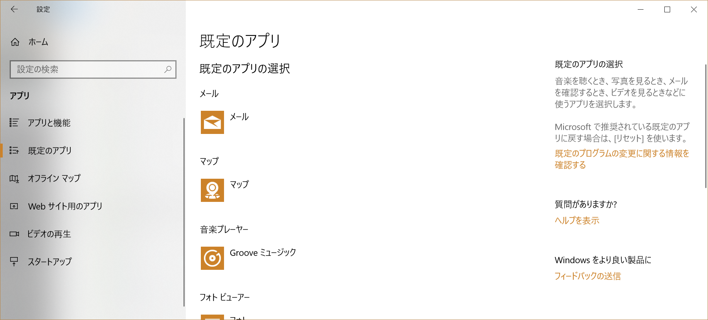
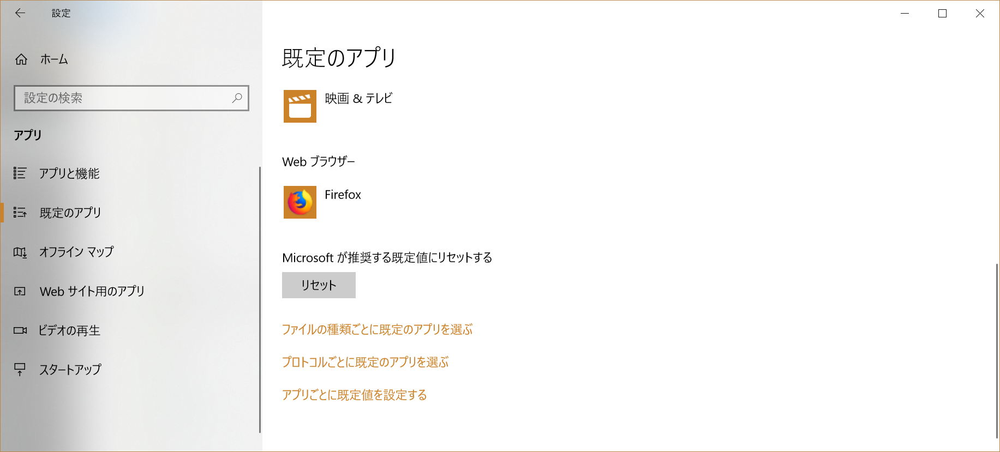
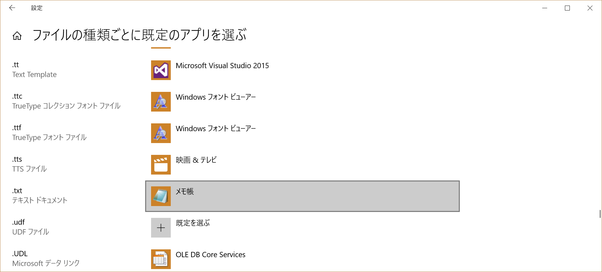
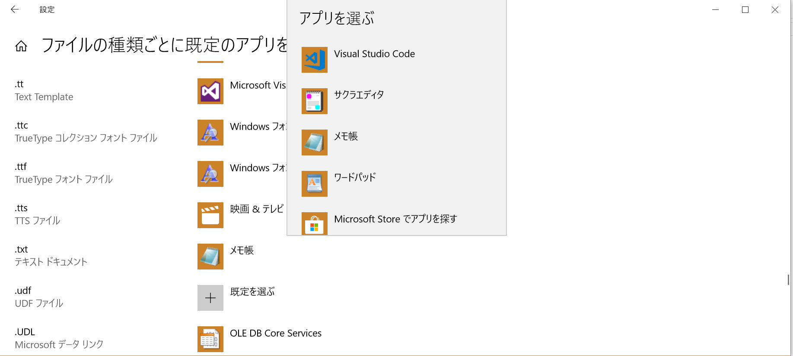
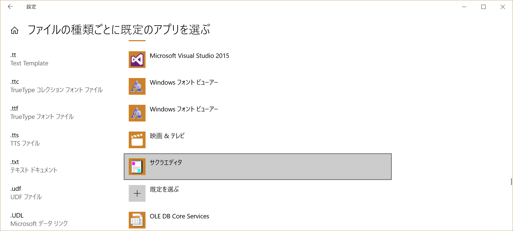

Windows 10 でのファイル拡張子関連付け
1. スタートボタンをクリック または Windowsキーを押す
2. 設定ボタンをクリック

3. アプリをクリック
4. 規定のアプリをクリック

5. 以下の画面で下までスクロールする

6. ファイルの種類ごとに既定のアプリを選ぶをクリック

7. 以下の画面で下までスクロールする
8. .txt の右のメモ帳をクリック

9. サクラエディタをクリック

10. 以下の画面になり、関連付けが完了
